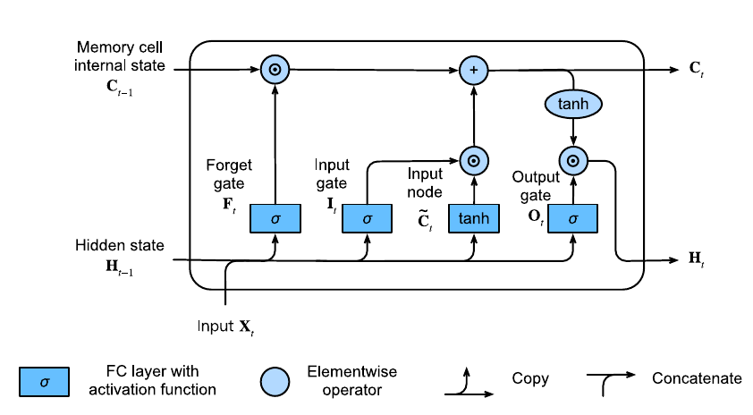
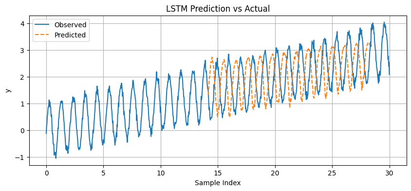
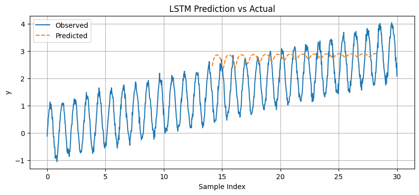
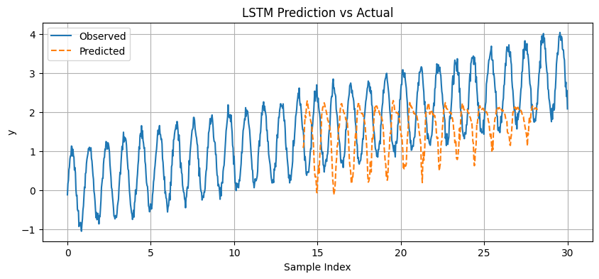
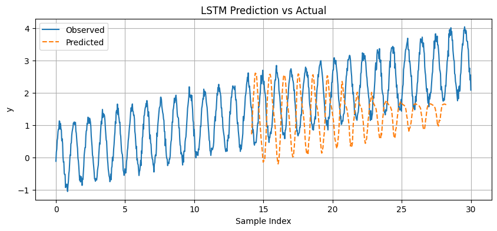
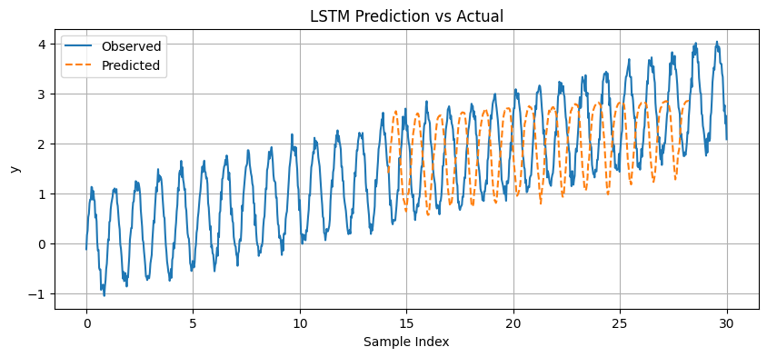
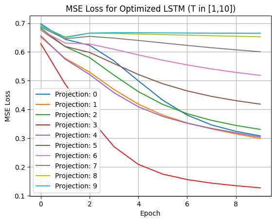

file_data
| file_name | assignment_4.pdf |
| author | ghostnation |
| course | ECE595 |
| date | 15MAY2025 |
1.0
Fundamentals of Recurrent Neural Networks
Recurrent Neural Networks (RNNs) are the foundation for the design of many sophisticated network architectures that ingest variable length inputs, such as Long Short-term Memory Network (LSTMs) and Transformers. Although RNNs are unique in their structure (at least insofar that they differ from CNNs and MLPs due to a unique configuration), RNNs are fundamentally processing input data, but performing an "exploit" due to the fact that time series data is ostensibly sequential and thus correlated. Thus, a network architecture has been developed and standardized over the years that represents a time-series aware system with memory persistence. RNNs are constructed in a way in which they are provided with a memory window within which data is accumulated and cumulatively integrated into the next available data inputs over a temporal period. This is generally referred to as the hidden state, which serves as a memory repository upon which the discrete time instances of states and observations are given perception of their previous experiences. This hidden state (\(h_t\)) is parametrized by a set of weights and biases that enables to to engage in a standard training procedure endemic to all neural networks: backpropogation.
Unrolled RNN Intuition

The unrolled visual representation of an RNN that passes a parametrizable hidden state between sequence iterations, designed in such a way that historical data contributes to the value of the hidden state. Parametrizations of the weight matrices are invariant between time steps, thus affording an architecture that does not implement \(O^n\) growth of parameters for increasing hisotorical perception.
1.1
Challenges with Traditional RNNs
Because RNNs pass the error signal down through the chain of time-series data, linked through a trainable hidden state weight matrix, a predicament emerges when the gradient response is magnified or dimished, and is referred to as an exploding or vanishining gradient in the ltierature. This prevents traditional RNNs with the classical three stage tunable matrix from having long-term memory utility, as it tends to overtrain (with scignificant oscillations along the eignvalues of the hidden state weight matrix), or undertrain (with no movement of the hidden state weight matrix that would result in adequate response to any error signal that would persist at earlier time steps). RNNs also have a fixed "temporal" window, or memory capacity, for which transient data can be acknowledged; expanding this window requires exponentially more computing power and memory storage. Finally, RNNs, due to the inherent reliance on sequential data are generally slow to train due to serialization of the trianing phase, instead of parallelization, in hardware. A mechanism by which to address these aforementioned issues is to compact both the input and output vectors, which eliminates the problem elicited by recurrence, but introduces new complications, because the system is no longer scalable, memory persistent, and comprised of ordinal data. This mechanism requires a new scheme that "attends" to data that is discovered to be salient, and affords such data with an "attention" metric, which assesses similarities between a query (prompt) and key (data samples), and builds a value that dictates the relevance of the latter to the former. Thus, perhaps ironically, the most effective method available to evaluated sequential data is indeed one that removes the nature of sequential inputs and instead directs the system to maintain anembedded memeory of salient events.
1.2
Data Representations in RNNs
In order to begin the discussion of how an RNN functions, and the fundamental theoretical alterations that enable RNNs to dominate serial prediction tasks, we must first begin with an exposition of sequential data. Sequential models originate from an initial directive to characterize a prediction based on past inputs, commonly referred to as autoregressive modeling; the objective is to define an expected value of a system given parameters: \(\mathbb{E}[x_t | x_{t-1}, \dots, x_1]\). The predicament with pure autoregressive datasets is that they do not accommodate variable length data, which is the case with most sequential, data driven scenrios, where some data has been recorded over long periods of time, and other data has only been tracked over a short time period. Typically, we are interested in some finite temporal window, which is the fundamental induction that allows these datasets to be "trainable" by a neural network, because it affords structure to each element in the window so that it can be parametrized by weights and biases. The implementation of memory, as mentioned previously, is accomplished with some tracking state, \(h_t\) that maintains a record of previous epxeriences.
As with any optimization paradigm, the structure of the loss function will dictate it's utility and allow for testing, validation, and deployment of the system once trained. RNNs are designed to ingest time-series data, and thus, when trained, is afforded observed values to reference at each time step within the temporal window. For classification data, the objective tends to minimize the negative log likelihood of predictions at each time step, as sequential data is afforded predictions at every logged event.
1.0
Joint Probability Decomp Objective (Autoregressive Prediction)
$$ P(x_1, \dots, x_T) = P(x_1) \prod_{t=2}^{T} P(x_t | x_{t-1}, \dots, x_1). $$
$$ P(x_1, \dots, x_T) = P(x_1) \prod_{t=2}^{T} P(x_t | x_{t-1}, \dots, x_1). $$
We will briefly mention that in order to structure sequential data in a way that is suitable for processing, the data must be tokenized, and perhaps grouped in contrived, secondary structures (such as n-grams) in order to perform statistical analysis. Due to the impetus driven by language models on RNNs, we typically refer to models that ingest time-series data as language models, even if data is not representative of a language system. Markov Models are the theoretical foundation of erecting the foundation of predictive mechanisms in sequential data, and the order of the model is a reference to how many steps ahead the system is capable of predicting a result, and conversely, how many dependencies an individual prediction relies on when generated. These concepts allude heavily to information theory heuristics, and the reader is suggested to refer to such work for more fundamental understanding of cross-entropy, surprisal, perplexity, and design terminology such as corpus, vocabulary, tokens, etc., zhang2023dive.
2.0
Analysis of LSTM networks for Prediction
In the following sections, we outline two LSTM architectures based on certain protocol criteria (for example, a defined kernel size, pooling layer, number of convolution layers, etc). The parameters of the network architecture are defined in Table 1. In the following section, we briefly discuss the deficiencies of RNNs that LSTMs attempt to mitigate.
2.1
LSTMs vs. RNNs
Despite the fact that both model architectures attempt to solve the same space of problems, LSTMs are designed in a way that is directed towards eliminating the problem of exploding/vanishing gradients. The conventional approach implemented on traditional RNNs, the gradients, when propogated through recurrent evaluations, are clipped via some bound associated with The Lipschitz Coefficient of the gradient.
Lipschitz association between Input Vector Distance
2.0
$$ |f(\mathbf{x}) - f(\mathbf{x} - \eta \mathbf{g})| \leq L \eta \|\mathbf{g}\|. $$
2.1 Gradient-Clipper Ball (receives projected gradients)
$$ \mathbf{g} \leftarrow \min\left(1, \frac{\theta}{\|\mathbf{g}\|}\right) \mathbf{g}. $$
$$ |f(\mathbf{x}) - f(\mathbf{x} - \eta \mathbf{g})| \leq L \eta \|\mathbf{g}\|. $$
2.1 Gradient-Clipper Ball (receives projected gradients)
$$ \mathbf{g} \leftarrow \min\left(1, \frac{\theta}{\|\mathbf{g}\|}\right) \mathbf{g}. $$
At best, the gradient clip via projection onto a ball is a useful hack that happens to be relatively ubuquitous in RNNs training schemes because it directly affects the learning rate down a change of recurrent events. Other methods to ensure numerical stability and computational feasibility include truncation (randomized or unrandomized) or asymptotic gradient modification to compensate for a vanishing or exploding gradient. Ultimately, the "recursive" resopnse chaing grows exponentially depending on the eigenvalues of the hidden state's weight matrix, which is problematic if any eigenvalues differ from 1. LSTMs introduce the concept of a memory cell, which is engineered to have gated connections and constant derivative edge weights. The gates affect how the hidden state is updated, and manage appropriate changes to maximize likelihood of output predictions across a time window for each event. These gate events are learned by the network, and thus the sctructure of their respective parametrizations is entirely self-managed during training. The visual representation of a memory cell is provided in the following figure. Essentially, a memory cell is comprised of 3 layers, an input gate, regulating the portion of input data that influences a hidden state update, a forget gate, regulating the amount of memory to cache or flush, and an ouput node, regulating the amount that memory of token values contributes to values at any arbitrary time step (assuming all previous data is recorded prior to the time step). Sigmoidal activations are implemented in each of the gates in order to bind \(\textbf{I}_T\) (input gate), \(\textbf{F}_T\) (forget gate), \(\textbf{O}_T\) (output gate) \(\in (0,1] \). An input node is placed as a mechanism by which to reconfigure the forget and input gates prior to passing data to the output gate, so as to allow for incremental increases or decreases in the magnitude of weighted input vectors to the output gate. Because it is activate by a tanh function, certain magnitudes of weights and biases can be associated with either decreases in output magnitudes (indicating classification "detours") or increases in output magnitudes (indicating increased classification confidence). With such precisely dedicated mechanisms, LSTMs are highly effective at time-series prediction while also having recalcitrance to the previously mentioned complications of RNNs. Despite the fact that Transformer networks have largely superseded LSTMs, key concepts of transformer networks such as similarity identification and attention mechanisms are, in fact, inspired from the "physics" of LSTMs.
LSTM Memory Cell

Visual render of the LSTM memory cell (hidden unit). The cell is effectively a 3 layer MLP (with the input node mechanism serving and a "combiner" for the forget and input gates). Having multiple cells in a hidden layer permits more approximation dynamics (the consequence of not having enough memory cells in a hidden layer would be poor fitting to the training data, high bias. Low bias and high variance is the consequence of having an excess number of hidden units; thus, the accompanying experimental procedure in the study attempts to identify the best parameters to select.
2.2
Experiment 1: Sinusoidal + Linear Dynamics
We set up two LSTMs, one with a single layer and another with a "double" stacked hidden layer. The ostensible result of adding this second hidden layer is that the LSTM will be equipped with the capacity to learn more abstract patters from "simpler" dynamics present in the sequential data, such as how groups of sequences influence the prediction error. This is similar to a subsample in a CNN to reduce the resolution, generalizing a receptive field, and running a kernel that traverses more "image data" using the data passed through from the previous layer, which effectively allows the network to learn how to minimize error on compressions of the earlier layer. The figure below shows the initial run of a trained LSTM, which is trained from a window of data on a corrupted signal with a linear trend. We utilize a pre-supplied dataset loader, which features the
sliding_windows function, and generate a set of input samples x that are assocaited with "y + t" output signal (look ahead data). The window itself defines how many previous instances of sequential data will be batched into an input, and the horizon value provides the ground truth observations, with the value dictating how many steps ahead the observations will be supplied. The system dyanmics, being relatively simple to generate, are produced on demand; if we intended to have 500 training samples, window size of 20, and 10 step projection horizon, the sliding_windows function would "attempt" to generate 500 samples of input data, but would only end up making "windows" up to the 471st data point;the last window would need 20 elements in it because of the window size (471 + 20) and we would need an additional 10 increments of projection to select the appropriate y value (491 + 10). Thus, the data would be able to train on 471 windows of length 20. The objective of this experimental procedure will be to identify an appropriate window_length \(\in [1,12]\) and hidden_size_count \(\in [1,100]\) that provides a good fit. We provide the experimentation trials and results in the following quad figure.
| Critera | 1-Layer | 2-Layer |
|---|---|---|
| hidden_layer_count | 1 | 2 |
| hidden_size_count | hyperparameter | hyperparameter |
| window_length | hyperparameter | hyperparameter |
| projection_horizon | 3 | 3 |
| system_dynamics | \(y = sin(6t) +0.1 t + \epsilon\) | \(y = sin(6t) +0.1 t + \epsilon\) |
| noise_feature (\(\epsilon\)) | Gaussian, \(\mu\) = 0, \(\sigma\) = 1 | Gaussian, \(\mu\) = 0, \(\sigma\) = 1 |
Windowing Data Generator
The data generator is designed to generate a sequence of x inputs the size of the
window_length parameter, and a corresponding y observation point a distance away from the most recent x point equal to projection_horizon. This forces the LSTM to learn a specific "future observation" based on a window of x inputs. A batching operation would merely select random "windows" for training (stochasticity).
LSTM (low performance baseline)
The data generator is designed to generate a sequence of x inputs the size of the
window_length parameter, and a corresponding y observation point a distance away from the most recent x point equal to projection_horizon. This forces the LSTM to learn a specific "future observation" based on a window of x inputs. A batching operation would merely select random "windows" for training (stochasticity). This model was trained for 100 epochs and had an MSE error of 3% after training.
LSTM 1 Testing Array (parameters in description), E1

|
 |
a) window_size: 20, hidden_nodes: 10, error: 0.041; b) window_size: 10, hidden_nodes: 20, error: 0.032; c) window_size: 8, hidden_nodes: 40, error: 0.03; d) window_size: 12 , hidden_nodes: 80, error: 0.019.
We expect to find a window length and hidden node parameter that would allow for accurate prediction of of a three step-ahead horizon, but does not overfit on the data (which may occur if the window is chosen to be too long/specific as it narrows the learning increasingly towards the dynamics of the sequence). We expect that a window that is adequately representative of the sinusoidal data (and thus we require, at a minimum, 1 period of the signal) and the linear trend. We perform the same test on LSTM 2 (which has a penultimate relu activated output later) and present our findings in the following figures. The parametrizations for the figure (in order from a, b, c, d) are different from the parametrizations that were used in the previous testing iteration with LSTM 1 (which are maintained within the caption text of Figure 5).
LSTM 2 Testing Array (parameters in description), E1
|
 |
 |
|
 |
 |
a) window_size: 1, hidden_nodes: 10, error: 0.041; b) window_size: 4, hidden_nodes: 20, error: 0.032; c) window_size: 8, hidden_nodes: 80, error: 0.03; d) window_size: 12 , hidden_nodes: 100, error: 0.019.
In review, we observe that LSTMs with more hidden cells are able to better approximate noisy, sinusoidally shaped, sequential data, and short "horizons" result in much better characterization beause fewer errors have propogated over an elapse of time. This is an endemic phenomenon of RNN based architectures; for example, reservoir compute networks, which are RNNs with static weights and biases throughout except at the output layer, are able to efficiently train on data but predict only a few time steps ahead, and are thus effective for interpolative tasks or brief extrapolations of chaotic systems cucchi2022hands. As expected, we should expect to see convergence of accuracy metrics as the number of hidden cells increases, as the network is able to learn and characterize more dynamic patterns in the set. Abstraction via adding more layers is certianly beneficial, as shown in the following graphical representation with MSE errors populated from the data generated from the experimental procedure, which presents the loss trajectories over various projection distances for the 2-layer networkd standardized on a window of 12 and hidden size of 100 memory cells.
MSE Loss for Optimized LSTM (2-layer), E1

2.3
Experiment 2: Constant Sinusoidal Dynamics
The following experimental procedure is a replication of Experiment, with the exception that the signal dynamics no longer possess non-oscillatory linear dynamics, and the equation appears as \(y = sin(6t) + 0.1g(t)\). We include two quad figures to represent the efficacy in prediction for the 1-layer and 2-layer LSTMs respectively along with their MSE loss expansions for the best performing LSTM from 1 to 10 projections along the time horizon.
LSTM 2 Testing Array (parameters in description), E2

|

|

|

|
a) window_size: 1, hidden_nodes: 10; b) window_size: 4, hidden_nodes: 20; c) window_size: 8, hidden_nodes: 80; d) window_size: 12 , hidden_nodes: 100.
LSTM 2 Testing Array (parameters in description), E2

|

|

|

|
a) window_size: 1, hidden_nodes: 10; b) window_size: 4, hidden_nodes: 20; c) window_size: 8, hidden_nodes: 40; d) window_size: 8 , hidden_nodes: 80
MSE Loss for Optimized LSTM (2-layer), E2

The characterization of the dyanmics in Experiment 2 afforded much better characterization, as indicated by the prediction renders in the quad-figures. This is primarily due to the fact the latter system is not influenced by a secondary dynamic (note that the first system exhibited a sinusoidal and direct proportional response to the elapse of time). With a simpler system, the LSTM is able to characterize the activity more effecitvely and quickly (we note that fewer epochs of training are required to observe training convergence). Due to the nature of this network utilizing the numpy library exclusively, we might expect implementing an optimizer or loading the data on a GPU network to train more aggressively over a longer duration will increase the accuracy to some degree.
The characterization of the dyanmics in Experiment 2 afforded much better characterization, as indicated by the prediction renders in the quad-figures. This is primarily due to the fact the latter system is not influenced by a secondary dynamic (note that the first system exhibited a sinusoidal and direct proportional response to the elapse of time). With a simpler system, the LSTM is able to characterize the activity more effecitvely and quickly (we note that fewer epochs of training are required to observe training convergence). Due to the nature of this network utilizing the numpy library exclusively, we might expect implementing an optimizer or loading the data on a GPU network to train more aggressively over a longer duration will increase the accuracy to some degree pearlmutter1990dynamic. Admittedly, the oscillatory nature of the dynamics pose a complication when computing gradients as there are frequent directional changes of the gradients during backpropagation, which is one supporting notion for the "lagging" nature of both LSTMs in both experiments morchdi2023exploring. Undoubtedly, the most significant factor that influences the networks accuracy is the number of hidden cells, as too few cells will prevent the network from characterizing the dynamics of a signal, provided that the window length encompass at LEAST one period of the signal. In both experiments, having an additional hidden layer, and an additional output layer, affords the network with greater evaluation capacity. We designate the 2-layer network as having superior approximation capabilities, with a MSE of > 0.001, whereas the 1-layer network was not found to converge to a lower value than 0.01 within the extent of our testing effort.
References
Appendix
Numpy-only LSTM
Numpy-only LSTM
Numpy-only LSTM